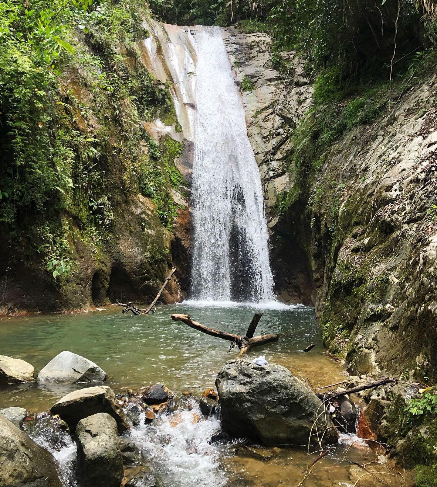
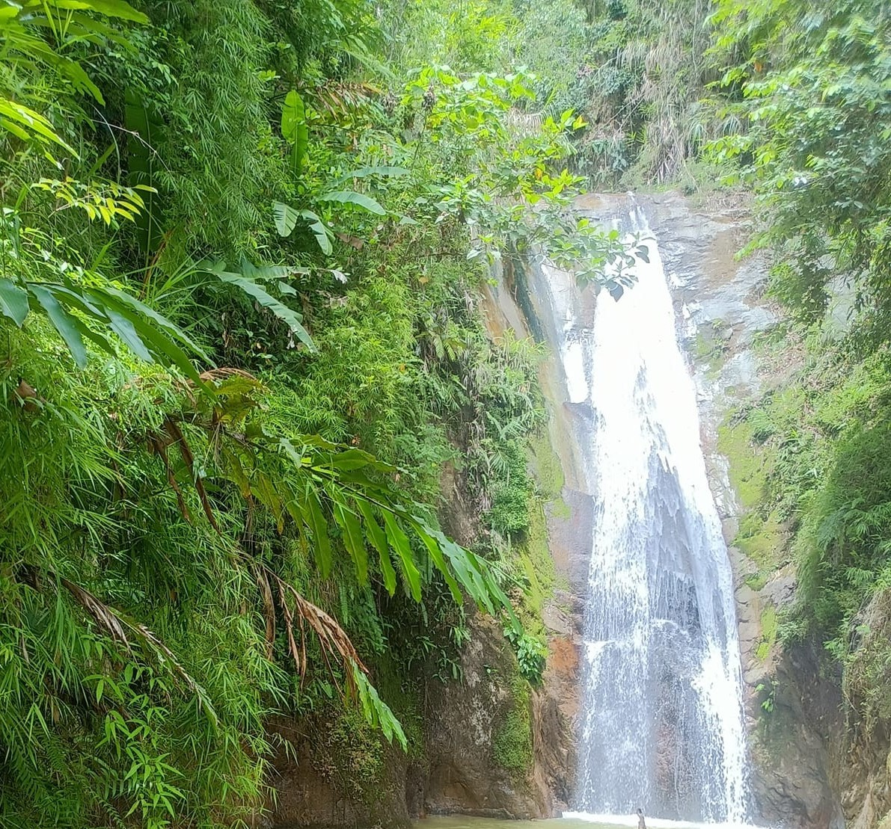
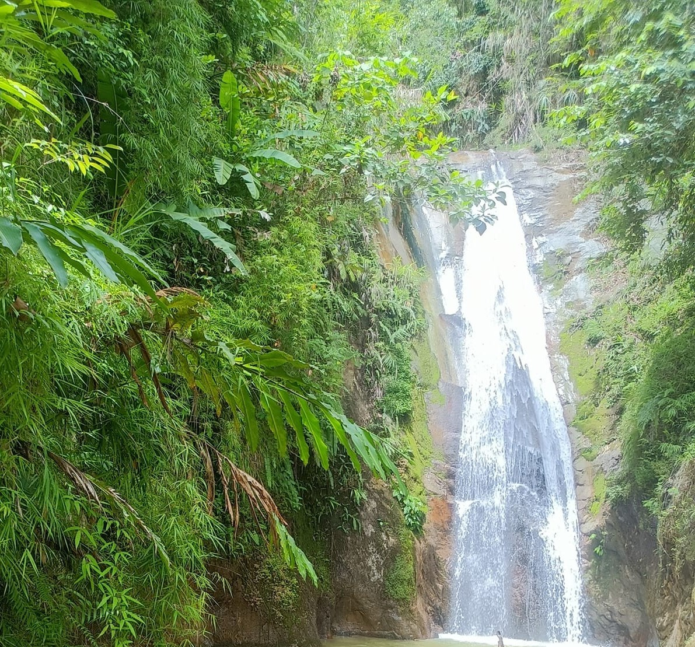
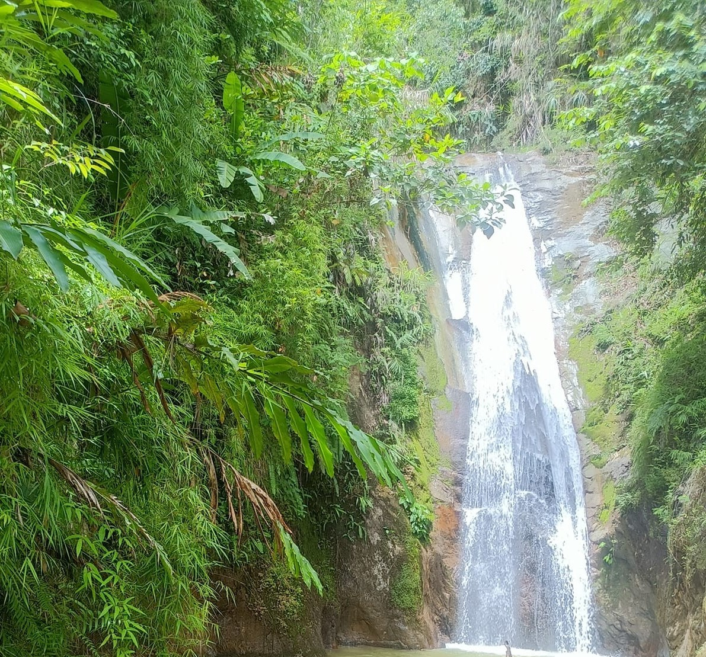
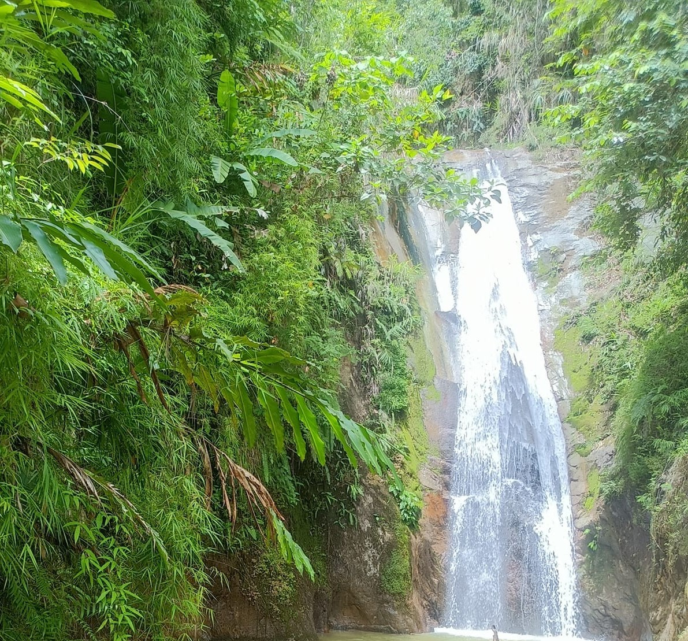

 



Located in the forested landscapes of Banila, Dupax del Sur, Catanan Falls is a serene natural escape that rewards visitors with its refreshing cascade and tranquil surroundings. The falls pour gracefully into a cool basin, perfect for a rejuvenating dip after a scenic trek. Surrounded by lush greenery and the soothing sounds of nature, the area offers a peaceful retreat for adventurers, nature lovers, and those seeking quiet moments away from the bustle of town life.